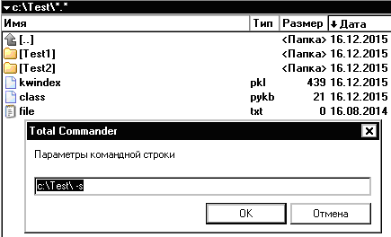
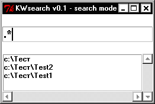

Програма призначена для каталогізації файлів та створення баз знань на основі файлових систем. В найпростішому випадку програма може бути використана для швидкого пошуку в каталозі за ключовими словами або назвами файлів.
Програма може працювати як плагін файлового менеджера Total Commander. Для цього перетягніть модуль KWsearch.pyw на панель Total Commander і введіть параметри:
?%P -k для додання ключових слів,
?%P -i для індексування поточного каталогу,
?%P -s для пошуку в поточному каталозі.Розглянемо приклад. За допомогою Total Commander увійдіть в каталог, який буде кореневим каталогом онтології, наприклад, c:\Test. Виконайте програму так:
KWsearch.pyw c:\Test\ -kабо клацніть на кнопці панелі Total Commander та введіть параметри командного рядка c:\Test\ -k. З’явиться вікно для введення ключових слів. Після введення, в каталозі появиться файл ckass.pykb з вмістом kw(“word1”,“word2”). Де kw - функція, яка додає в базу знань ключові слова. Після введення ключових слів в усіх потрібних каталогах, каталог c:\Test потрібно проіндексувати. Для цього виконайте програму з параметрами командного рядка c:\Test\ -i. В каталозі c:\Test повинен з’явитись файл з індексами kwindex.pkl. Тепер можна виконувати пошук. Виконайте програму з параметрами командного рядка c:\Test\ -s. З’явиться вікно, у верхній частині якого можна вводити текст або регулярний вираз (з натиском Enter) для пошуку. Список результатів з’явиться нижче.


Програма також може бути використана для створення повноцінних баз знань мовою Python. Класи або індивіди онтології декларуються у файлах class.pykb і можуть бути реалізовані, наприклад, класами мови Python. Унікальним іменем класу є шлях до каталогу. Файли ckass.pykb з різних каталогів об’єднуються в один Python модуль, до якого необхідно додати правила і машину логічного виведення.